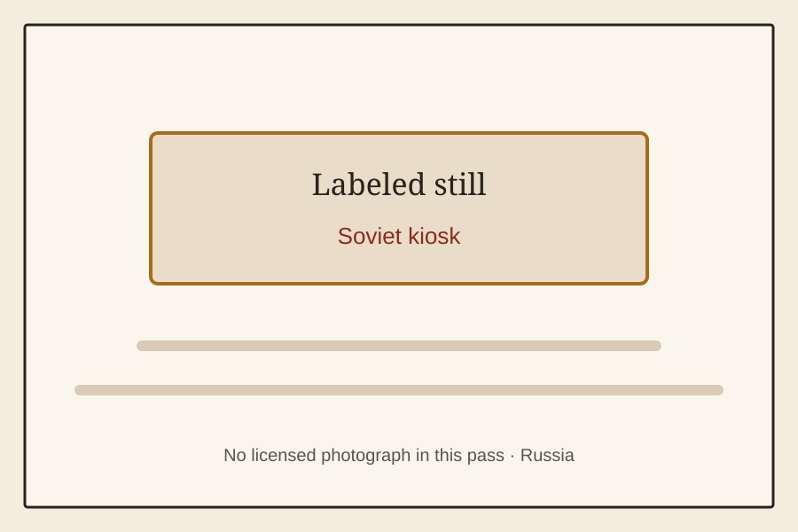

The Old Shelf / Russia / Soviet kiosk
Soviet kiosk
Russiastills only
A labeled still for Soviet kiosk. No licensed photograph was available in this pass.

A labeled still for Soviet kiosk. No licensed photograph was available in this pass.